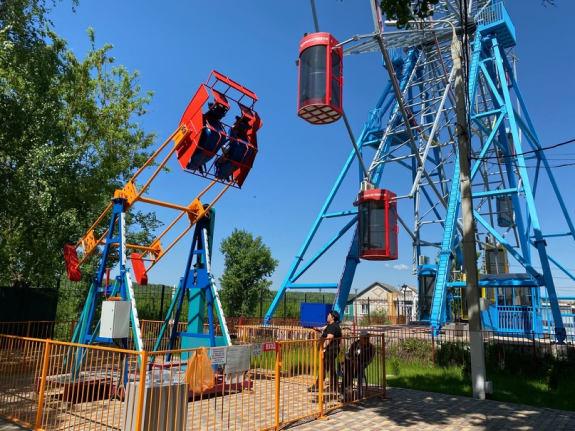
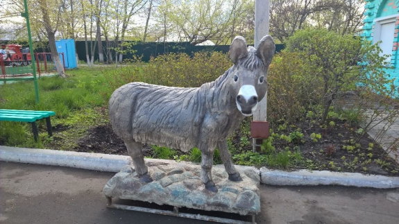
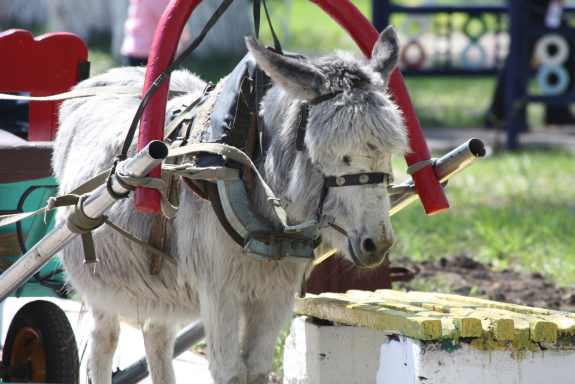
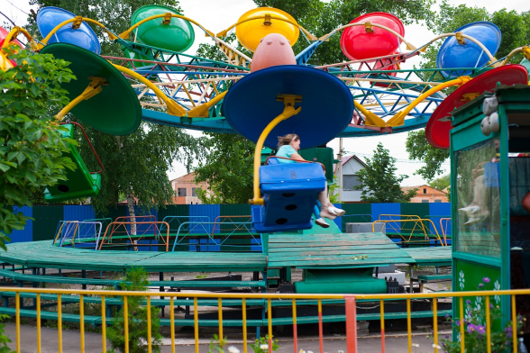
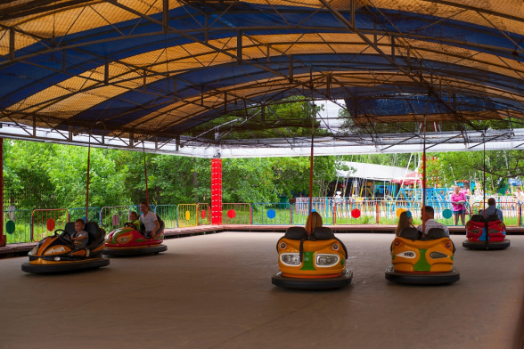
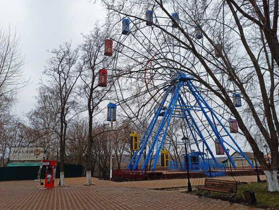
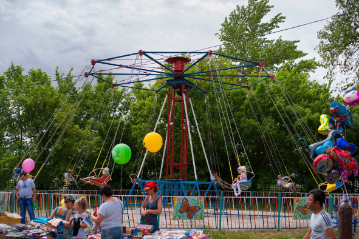
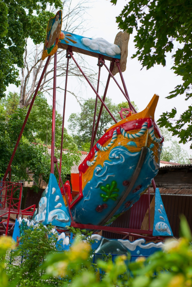

В городском парке установлен аттракцион "Хип-хоп".Новый аттракцион
является экстремальным и предназначен для пассажиров от 14 лет. Как и
все аттракционы городского парка, "Хип-хоп" прошел все необходимые
проверки, освидетельствование и в самое ближайшее время готов будет
встретить борисоглебских любителей экстрима.


Зося. Многие борисоглебцы приводили детей в парк посмотреть на ослика.
Желающих ее погладить и покормить было не меньше, чем покататься на
тележке. Зося редко показывала характер. Доброе, трудолюбивое животное
стало для борисоглебских малышей другом на долгие годы.В последние
годы Зося все больше отдыхала, начала болеть и даже перенесла операцию
по удалению опухоли . Её не стало зимой 2016 года.В память о Зосе в
парке установлено её скульптурное изображение в натуральную величину.
«Памятник» получился трогательным: Зося стоит на своем привычным месте
– у центральной кассы, где долгие годы встречала малышей ее тележка.

Аттракцион «Орбита -420» предназначен для развлечения и активного
отдыха детей старше 10 лет и взрослых. 24 посадочных
места.Стремительный аттракцион «Орбита» - один из скоростных и
экстремальных аттракционов парка, очень популярный у посетителей.
Разместившись удобно в кабине, вы поднимаетесь на значительную высоту
и начинаете полет под углом в 45 градусов, все вокруг быстро
перемещается вниз и вверх: земля, небо, парк. Время одного сеанса
катания 3 минуты.

Аттракцион «Автодром» - неувядающая классика аттракционов, он
стабильно в тройке самых популярных аттракционов парка. На большом
поле любители быстрой и экстремальной езды могут испытать свои силы.
Управлять яркими автомобилями может любой, на этих безопасных машинках
можно не бояться столкновений, поскольку для смягчения столкновений с
оградой площадки и с другими участниками машинку опоясывает резиновый
бампер. Скорость составляет всего 6-10 км.в час, но электрический
двигатель создает такое ускорение, а машинка настолько маневренная,
что создается ощущение поездки на спортивном каре. Цикл катания
составляет 3 минуты.

Аттракцион «Колесо обозрения», высота 30 метров. установлен в 2022
году, после демонтажа устаревшей конструкции аналогичного типа. Это
семейный аттракцион в виде большого вертикально установленного колеса,
к ободу которого прикреплены 15 закрытых кабинок. На этом аттракционе
можно насладиться прекрасными видами нашего города.

Аттракцион «Карусель цепочная» предназначена для развлечения взрослых
и детей старше 8 лет. На карусели десять посадочных мест, время
катания три минуты. Аттракцион «Цепочная карусель» является одним из
самых популярных семейных развлечений парка. Когда аттракцион
запускается, основание начинает вращаться вокруг своей оси, поднимая
пассажиров все выше и выше. «Цепочная карусель» подходит для
посетителей всех возрастов.

Аттракцион «Корабль на волнах» - это карусель волнообразного движения,
состоящая из подвижного макета корабля с установленными в нём десятью
посадочными местами и обрамления неподвижной части платформы в виде
панно морской тематики.Корабль совершает раскачивающиеся движения с
волнообразными подъёмами и спусками относительно центра карусели.
Продолжительность цикла катания 3 минуты.